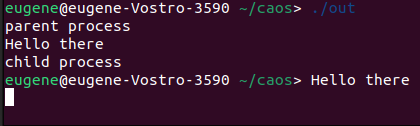
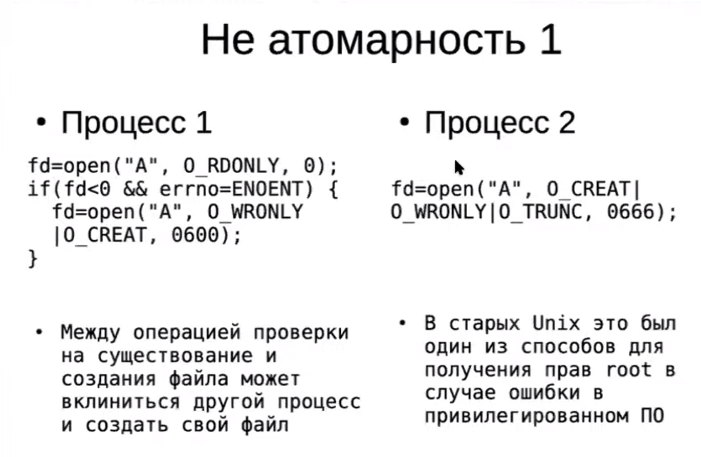
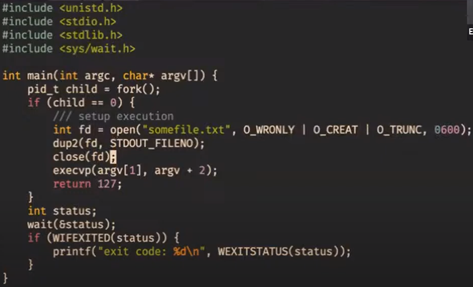

Процессы
Важные команды
ps
$ ps [OPTIONS] # информация о запущенных процессах
Пример использования:
$ ps aux
- Опция
aуказывает ps вывести на дисплей процессы всех пользователей, за исключением тех процессов, которые не связаны с терминалом и процессами группы лидеров. - Опция
xв ps перечисляет процессы без управляющего терминала. В основном это процессы, которые запускаются во время загрузки и работают в фоновом режиме. - Опция
eуказывает ps отобразить все процессы. - Опция
f— полноформатный список, который содержит подробную информацию о процессах.
proc
/proc — это виртуальная файловая система. Ее основная задача — получение состояния системы и частично выполнение управляющих действий.
$ ls /proc # вывод в консоль директории виртуальных каталогов и подкаталогов
Что такое процесс
- Процесс - это запись во внутренних структурах ядра, в которую ядро записывает ресурсы и планирует выполнение. Программа, которую мы написали и запустили - это процесс.
- У процесса есть своя виртуальная память и таблица файловых дескрипторов.
Параметры процеса
USER- от имени какого пользователя выполняется процесс. Стандартный пример:root.PID- идентификатор процесса, у процессов выполняющихся в одно время он разный.STAT- статус процесса. Примеры статусов:S- процесс в состоянии ожидания,R- выполняющийся процесс,D- процесс ожидает ввода/вывода.
Нужные системные вызовы
-
Системный вызов
sleep- процесс будет спать в течение заданного количества секунд. -
Системный вызов
pause- заставляет вызывающий процесс спать до тех пор, пока не поступит сигнал, который либо завершит процесс, либо вызовет функцию, ловящую данный сигнал. -
Системный вызов
waitприостанавливает выполнение вызывающего процесса пока не завершится один из его дочерних процессов.
Как породить новый процесс?
- Системный вызов
fork- полностью копирует процесс, который его вызвал. Важно понимать, что хоть у них пространства виртуальной памяти изначально идентичные (сразу после копирования), они всё же отдельные. То есть изменение переменной в одном процессе не поменяет её в другой.
Как это использовать
#include <unistd.h>
#include <stdio.h>
int main () {
fork();
printf("hello world from %d\n", getpid()); // id процесса - это целое число
}
Данный код приведёт к тому, что pid выведется дважды, и это будут два разных числа. Важно понимать, что зацикливания не произойдёт, так как новый процесс начнёт выполняться с момента строго после fork(). Более наглядно это будет, если послетреть на output кода ниже.
#include <unistd.h>
#include <stdio.h>
int main () {
printf("parent process\n");
fork();
printf("hello world from %d\n", getpid());
}
OUTPUT:
parent process
hello world from 2991610
hello world from 2991611
Так как виртуальная память копируется, то любые изменения переменных в склонированном процессе будут локальными, однако иметь одинаковые адреса. Наглядно это можно увидеть из примера кода ниже.
#include <unistd.h>
#include <stdio.h>
int x = 0;
int main () {
fork();
++x;
sleep(1); // для надёжности усыпим процесс, чтобы x успели поменять оба
printf("x = %d, &x = %d\n", x, &x);
}
OUTPUT:
x = 1, &x = 0x55f9 // разумеется реальный адрес будет длиннее,
x = 1, &x = 0x55f9 // но для наглядности взят короткий
Как же тогда в самом процессе понять дочерний он или родительский? Посмотреть на возвращаемое значение функции fork. В родительский процесс она возвращает PID дочернего, а в дочерний возвращает 0. В случае ошибки возвращаемое значение равняется -1.
Из этого также следует, что PID начинаются с 1.
Задан ли порядок выполнения родительского и дочернего процессов? Нет. Они могут выполняться в любом порядке и никак не синхронизированы.
Зачем нам вообще нужно, чтобы в системе было много процессов? Например, чтобы разные пользователи могли запускать программы, или один пользователь мог одновременно запустить несколько программ.
Что будет, если родительский процесс убить до того, как дочерний завершится? Для этого давайте посмотрим как будет выглядеть консоль целиком после выполнения кода ниже.
#include <unistd.h>
#include <stdio.h>
int main () {
pid_t id = fork();
if (id == 0) {
printf("child process\n");
sleep(2);
} else {
print("parent process\n");
}
printf("Hello there\n");
}

Что нужно знать про системный вызов wait? Если дочерний процесс уже завершился, а родительский ещё нет, то дочерний переходит с состояние zombie/defunct process, так как понимает, что родительский процесс всё ещё может захотеть вызвать wait.
Системный вызов для файлов
Что происходит при вызове open?
- Создаётся file description.
- В таблицу c file descriptors передаётся ссылка на данный file description.
- Индекс данной ссылки возвращается как результат системного вызова.
У процесса таблица file descriptors представляет из себя массив из указателей на file descriptions.
Сами file descriptions никак не привязаны к процессу.
Что происходит с файловыми структурами при системных вызовах?
fork:- struct file - увеличения счётчика указателей
- таблица file descriptors никак не изменится
close:- уменьшение счётчика указателей
- file description уничтожается, если на файл больше никто не указывает
lseek:- меняется позиция в file description
Важный факт: для разных процессов, читающих один и тот же файл, позиция считывания общая. То есть, когда читает один из процессов, указатель откуда чтение продолжится сдвигается для всех.
Атомарность
В чём состоит вопрос? Не получится ли так, что мы из двух процессов выполняем чтение или запись с одним и тем же файлом, и позиции чтения и записи будут как-то несогласованы (помним, что указатель на текущую позицию в файле общий для процессов)?
Пример не атомарности

Решение: добавить флаг O_EXCL, таким образом файл не будет создан заново.
Пример для логирования
Использование флага O_APPEND будет выполнять перемещение указателя на место записи в файле в самый конец и саму запись в данную позицию (то есть в конец файла) атомарно.
Ужасающий пример отсутствия атомарности
POSIX (стандарт) - не даёт гарантий атомарности на запись или чтение из файла. Например результатом write("123") и write("abc") из разных процессов может быть "1a2b3c".
Но можно расслабиться, Linux запишет всё без перемешивания.
shebang
При добавлении в скрипт записи вида #!<address>, запускается не сам скрипт, а интерпретатор <address>.
Пример:
#!/usr/bin/python3
print("hello")
bash не знает, что такое print, зато /usr/bin/python3 знает.
Семейство exec
Что происходит при вызове
- Текущий процесс остаётся без изменений
- Исчезает только виртуальная память и появляется новое пространство виртуальной памяти
- В данную виртуальную память загружается бинарный файл и начинается его исполнение
Пример для понимания
#include <unistd.h>
#include <stdio.h>
int main() {
execv(...);
perror("Error\n");
}
Сообщение об ошибке не выведется, так как данный процесс начнёт исполнять уже другой бинарный файл.
Так как же тогда использовать
#include <unistd.h>
#include <stdio.h>
int main() {
pid_t child = fork();
if (child == 0) { // если мы в дочернем процессе
execv(...);
}
int status;
wait(&status);
printf("Some code here"\n);
}
Здесь мы имеем, что дочерний процесс отдаст свои ресурсы под выполнение бинарного файла, а родительский продолжит выполнять свой код дальше. wait добавили, чтобы родительский процесс сначала дождался выполнения дочернего процесса.
dup2
Системный вызов делает так, чтобы определенный файловый дескриптор (передаётся по номеру), смотрел туда же, куда и другой файловый дескприптор (тоже передаётся по номеру).
Пример использования:
